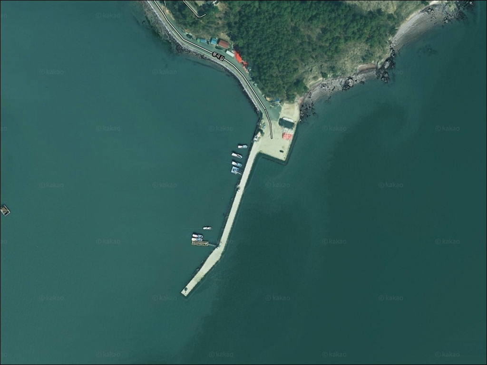
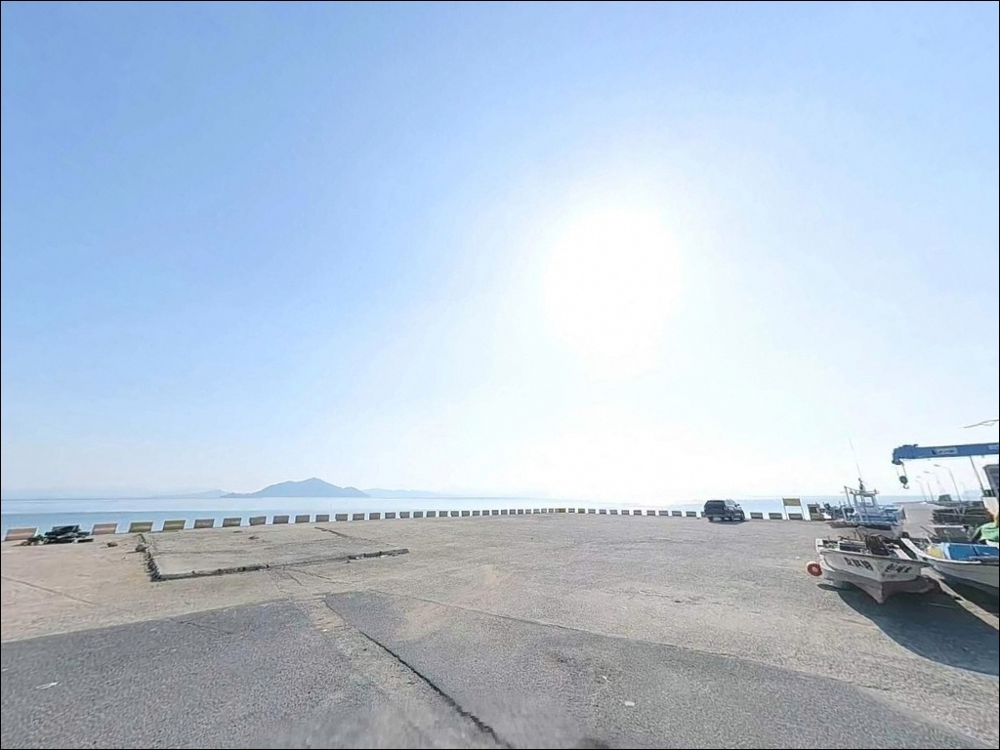
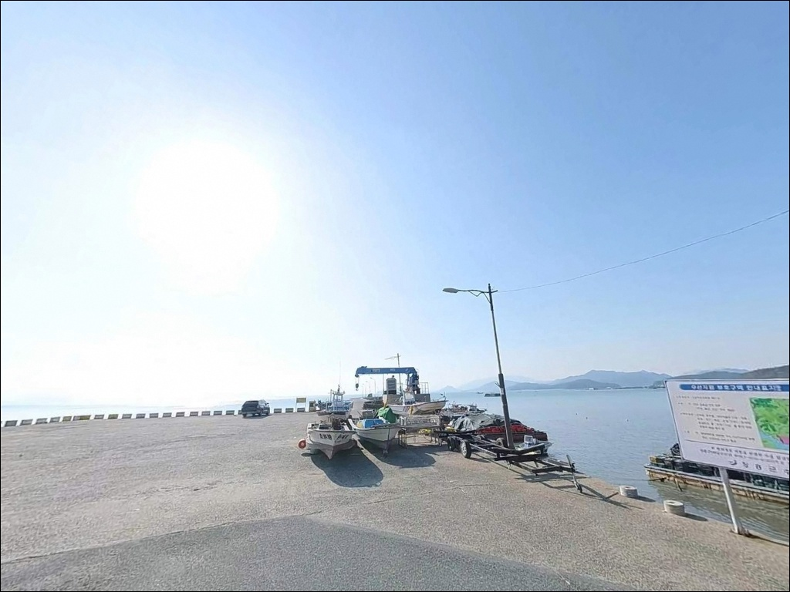
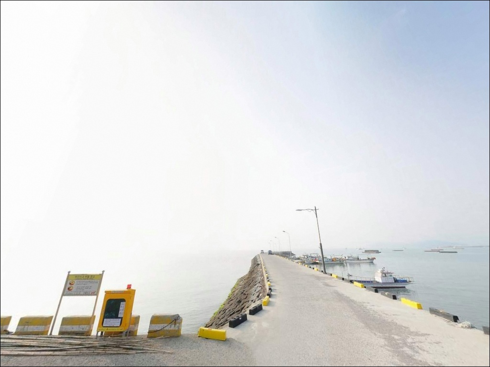
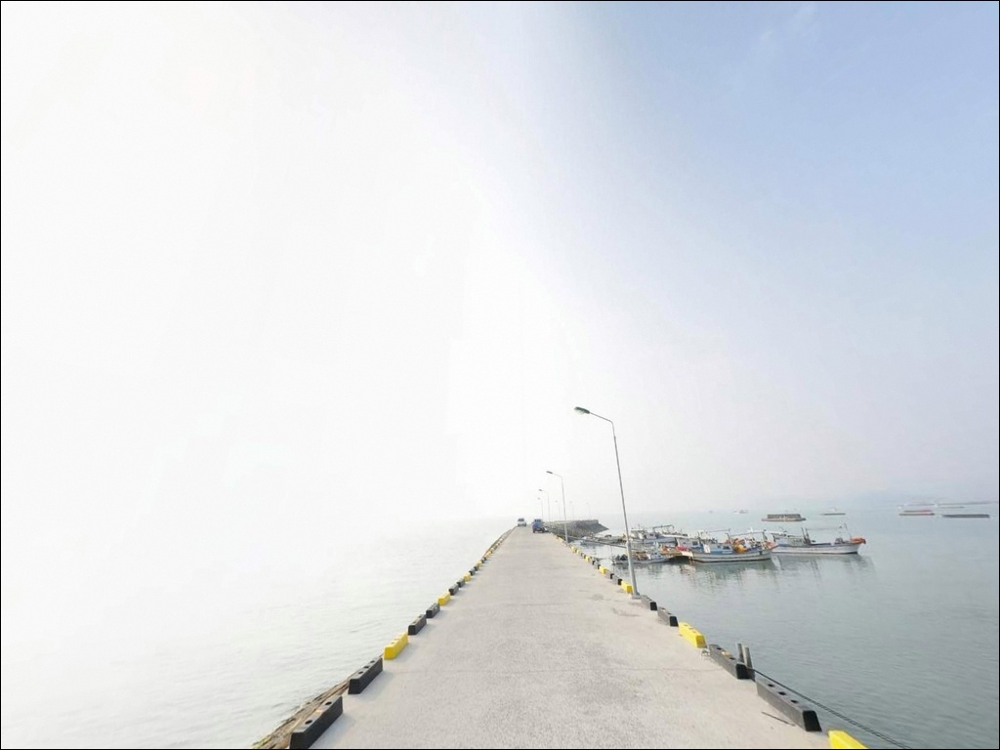
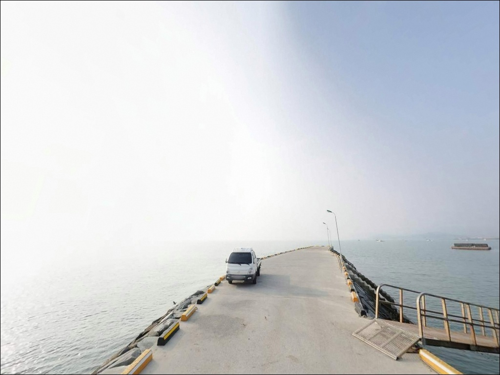
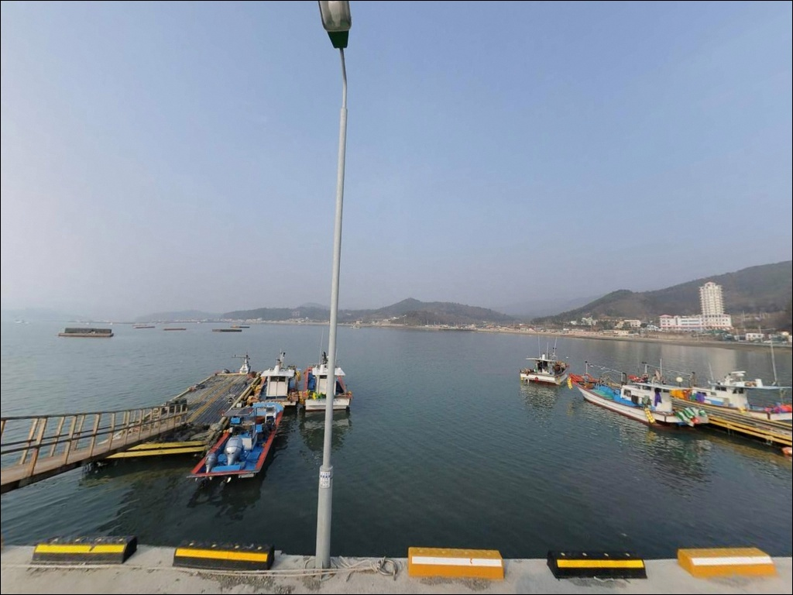
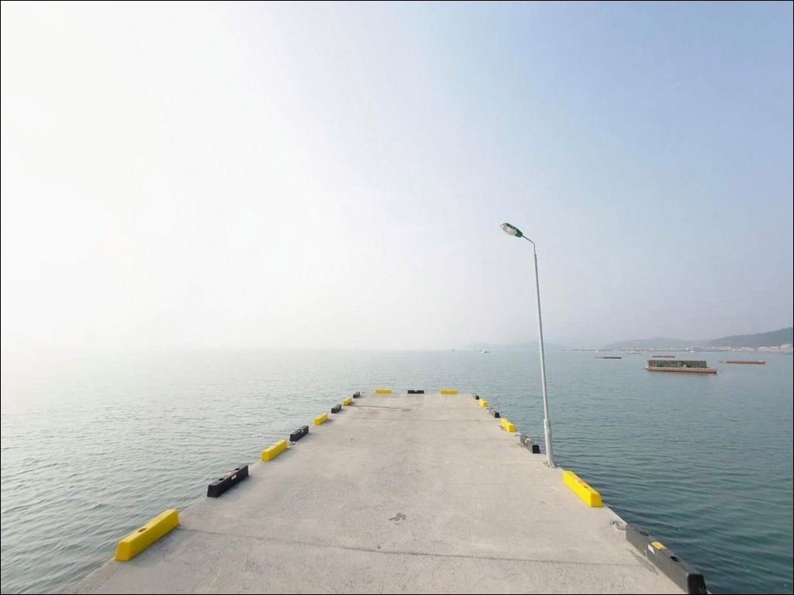
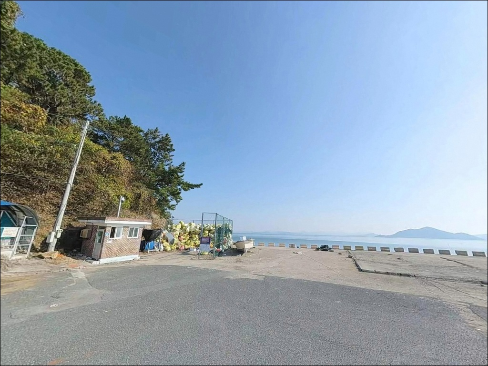

수문리방파제, 전남 장흥군 바다낚시와 차박을 완벽하게 즐기는 포인트
이 페이지에는 광고(제휴 링크 포함)가 있으며, 광고 링크를 통해 구매하면 운영자가 판매 수익 또는 수수료를 받을 수 있습니다. 포인트 사진: 카카오맵 스카이뷰·로드뷰. 이 페이지의 지도·사진 이미지는 카카오맵의 실제 서비스 이미지와 다를 수 있습니다.


포인트 안내
수문리방파제
전남 장흥군 안양면 수문리 32-42
득량만 내만형 방파제는 물때 계산 없이 찾아가면
채비를 내려도 수심이 너무 얕아
낚시 자체가 성립하지 않는 상황이 생깁니다.
간조 전후에는 내항 근접 구간의 바닥이 드러날 만큼
조수간만 차가 뚜렷한 해역이라,
들물 진입 시각 계산이 방문의 첫 단계입니다.
수문리방파제는 전남 장흥군 안양면 수문리에 자리한
지방어항 방파제로, 공식 연장 581m 규모를 갖춘
이 일대의 대표 낚시 포인트입니다.
수문천 기수역과 득량만 외해 방향이 교차하는 지형 구조 덕분에
원투·에깅·루어 복수 방식을
한 장소에서 운용할 수 있는 거점입니다.
이 글은 수문리방파제의
진입 동선, 차박 여건, 물때 판단 기준,
낚시 스타일별 지형 조건에 집중합니다.
조황 단정이나 특정 어종 보장은
이 글의 범위에 포함되지 않습니다.

1. 포인트 위치 및 진입 동선 분석
안양면 운흥리 방면에서 845번 지방도를 따라
수문리 방향으로 진입하면
수문해수욕장과 수문항이 같은 생활권 안에 자리합니다.
진입로 전 구간이 포장도로이며
도로 폭도 교행이 가능한 2차선 수준으로 유지됩니다.
대형 SUV나 캠핑 장비를 실은 차량도
별다른 어려움 없이 방파제 입구까지 접근할 수 있습니다.
주차는 크게 두 곳을 기준으로 잡으면 됩니다.
수문해수욕장 마을 입구 공영주차장이 규모가 크고
방파제까지 도보 이동 거리가 짧아 낚시 거점으로 활용하기 좋습니다.
항 인근 노상 주차 공간도 확보되어 있으나
어선 접이안 시간대에는 동선 우선권이 어민에게 있으므로
차량 위치를 미리 조율해야 합니다.
회차 공간은 수문 어촌체험마을 진입부와
해수욕장 주차장 일대에서 확보됩니다.
방파제 규모가 크고 주변 공간이 넉넉한 편이라
대형 차량의 회차에도 큰 불편은 없는 구조입니다.

2. 차박 환경 평가 및 야간 체류 여건
수문리방파제 일대는 해수욕장·어촌체험마을·오토캠핑장이
가까운 거리 안에 함께 자리한 복합 구조입니다.
수문랜드 블루투어 오토캠핑장이 인근에 운영 중이어서
차박을 위한 인프라 선택지가 있는 편이며,
해수욕장 주차장은 방파제와 연결 거리가 짧아
낚시 후 이동 없이 바로 머무는 동선이 성립합니다.
야간 환경은 어촌 기준으로 비교적 밝은 편입니다.
해수욕장과 마을 상가 조명이 해안도로 일대를 비추고 있으며,
방파제 입구 주변도 기본 가로등이 설치되어 있습니다.
다만 방파제 외곽 끝단 방향으로 이동할수록
조명이 닿지 않는 구간이 늘어나므로
야간 출조 시 헤드랜턴은 필수입니다.
득량만 내만 구조 덕분에 외해에 비해 파도 영향이 완충되는 편입니다.
다만 남~남서 방향의 강풍이 부는 날에는
외항 끝단 노출도가 높아지므로
기상 예보를 하루 전과 당일 아침 두 번 확인하는 것이
현명한 준비입니다.


3. 주변 편의시설 및 인프라 현황
수문리 마을 반경 내에 식당과 소형 상점이 분포하며,
안양면 소재지까지는 차량으로 약 5~10분 거리입니다.
이 동선 안에 편의점·마트·주유소가 있어
출발 전 보급을 여기서 마무리하는 것이 효율적입니다.
수문리 마을 내 수산물 직판 시설도 확인되어 있어
현장에서 간단한 식재료 구입도 가능한 편입니다.
수문해수욕장 내에는 공중화장실이 연중 개방 상태로 확인됩니다.
방파제 인근 어항 시설 자체의 화장실 여부는
현장 확인이 필요하므로,
해수욕장 화장실을 기준 거점으로 잡고
자리를 선정하는 편이 안정적입니다.
응급 상황 발생 시 장흥읍내까지
차량으로 약 15~20분 거리에 종합병원과 약국이 있습니다.
섬 지역이 아니어서 긴급 이동에 큰 제약은 없지만
비상약품과 기본 구급 용품은 출발 전 챙겨 두는 편이 좋습니다.

4. 방문 전 반드시 챙겨야 할 준비사항
수문리방파제 방문에서 가장 먼저 확인해야 할 것은
물때입니다.
득량만 전역은 조수간만 차가 크고
간조 시 내항 일부와 방파제 기저부 구간의 수심이
급격히 낮아지는 서해안 특성을 공유합니다.
바다타임에서 수문리 기준 물때를 미리 확인하고
들물이 올라오는 타이밍에 맞춰 입장 시각을 조정하는 것이
기본 전략입니다.
갑오징어 에깅을 목적으로 방문한다면
봄철(4~5월) 득량만 에깅 조황을 출발 전에 검색해 두는 것이 좋습니다.
감성돔을 노린다면 가을(9~11월)이 이 해역의 집중 시기이므로
시즌 여부를 먼저 판단해야 합니다.
바닥이 갯벌·모래·여밭이 혼재하는 지형 특성상
여분 채비는 넉넉하게 준비하는 편이 안전합니다.
마을 선착장과 어항이 공존하는 구역입니다.
어선 이동 동선과 어민 작업 공간을 방해하지 않는 자리 선정이
기본 매너이며, 테트라포트 이동 시에는
전용 신발과 구명조끼를 반드시 착용해야 합니다.
머문 자리의 쓰레기는 반드시 수거해서 나와야 합니다.

5. 득량만 물때를 반드시 확인해야 하는 이유
수문리방파제가 자리한 득량만은
수심이 완만하고 갯벌이 넓게 발달한 전형적인 남해 내만입니다.
방파제 끝단 수심은 만조 시 5~7m 안팎으로 형성되지만
간조 시에는 방파제 기저부 구간의 바닥이 드러날 만큼
조수간만 차가 큽니다.
들물이 살아나는 중들물~만조 전후 구간이
원투·에깅 모두 채비 운용에 유리한 타이밍입니다.
방파제 총연장 581m는 전남 지방어항 기준으로 중대형급에 해당합니다.
방파제 외항 끝단과 꺾임 구간이 조류 흐름을 가장 잘 받는 자리이며,
이 구간에서 수심 변화가 뚜렷하게 나타납니다.
방파제 초입에서 중간까지는 수심이 완만하고
끝단으로 갈수록 점진적으로 깊어지는 구조라,
자리 선택만으로도 낚시 방식이 결정됩니다.
수문항 서쪽에서 사자산·삼비산 발원 물이
수문천으로 합류해 항 안으로 유입됩니다.
이 지점에 담수와 해수가 섞이는 기수역이 형성됩니다.
기수역이란 민물과 바닷물이 혼합되는 수역으로,
갑각류·저서어종의 먹이 활동이 집중되는 구간을 형성합니다.
이 기수역 주변은 낙지·농어·숭어의 먹이 동선이
집결하는 구조 조건을 갖추고 있습니다.
득량만 내만형 방파제는 간조 시 수심이 급격히 낮아지므로
들물 진입 타이밍이 원투·에깅 조과의 핵심 변수입니다.
출조 전에 득량만 조황과 수문항 낚시를 검색해서
최신 현장 상황을 반드시 확인하기를 권합니다.


6. 포인트에 적합한 낚시 스타일 제안
이 포인트에서 지형 조건에 가장 잘 맞는 방식은
원투낚시입니다.
외항 방향으로 채비를 멀리 던지면
갯벌과 모래가 섞인 바닥에서
저서어종을 노리기에 적합한 조건이 갖춰집니다.
방파제 중간~끝단 구간이 핵심 자리이며,
수문천 기수역과 가까운 구간일수록
낙지·붕장어 등 저서 어종의 반응이 살아나는 편입니다.
에깅도 이 포인트의 지형 구조에 잘 맞는 방식입니다.
에깅이란 갑오징어·무늬오징어를 대상으로
에기(인조 미끼)를 사용하는 루어낚시 방식입니다.
득량만은 봄(4~5월) 갑오징어 산란 집결지로 확인된 해역이며,
수문리방파제 외항 끝단과 수로 라인에서
에기를 바닥에 닿게 한 뒤 천천히 끌어올리는 방식이
이 해역의 수심 구조에 어울립니다.
수문천 기수역 주변에서는 농어 루어낚시도 시도해 볼 수 있습니다.
저녁~야간 들물 타이밍에 기수역 방향으로
루어를 캐스팅하는 방식이 이 지형의 특성을 활용하는 접근입니다.
찌낚시는 테트라포트 구간 및 방파제 끝단 외항 측에서
조류가 살아나는 물때에 집중하면 감성돔을
노려볼 수 있는 자리가 됩니다.
가을(9~11월)이 감성돔이 이 해역에서
방파제 전 구간에 입질하는 집중 시기입니다.
수문천 기수역과 방파제 끝단이 맞닿는 구간은
갑오징어·농어의 먹이 활동이 집중되는 지형 조건을 갖추고 있습니다.

7. 대안 포인트 및 플랜 B 동선
수문리방파제 조건이 여의치 않을 때
1순위 대안은 회진항입니다.
장흥 남부권 최대 규모의 국가어항으로
방파제 낚시 여건이 안정적이며
시설도 잘 갖춰진 편입니다.
물때나 날씨 조건이 맞지 않을 때
수문리에서 이동해 노리기 좋은 플랜B입니다.
율포방파제와 장환마을상단방파제도
같은 득량만 해역을 공유하는 대안 포인트입니다.
두 곳 모두 수문리방파제와 조류·수심 패턴이 크게 다르지 않아
기상이나 포인트 혼잡 상황에 따라
같은 해역 조건 안에서 이동 플랜을 세울 수 있습니다.
차박 거점을 바꾸고 싶다면
수문해수욕장 백사장 인접 주차 구역이 바다 조망이 더 우수한 편입니다.
방파제와 거리도 짧고
주차 공간도 넉넉해 차박을 메인으로 삼을 때
더 실용적인 선택지가 됩니다.

들물 타이밍만 맞추면
수문리방파제는 달리 보입니다
원투낚시로 저서어종을 노리거나
봄철 갑오징어 에깅 시즌을 겨냥한 낚시인이라면
수문리방파제의 지형 구조는 잘 맞는 조건입니다.
기수역과 외항 수로가 맞닿는 구간,
581m 방파제가 만드는 내·외항 구분 구조는
복수 방식을 한 장소에서 시도할 수 있는
드문 여건이기도 합니다.
반면 물때 확인 없이 간조 전후에 들어가거나
남서풍이 강한 날 외항 끝단에 자리를 잡으면
낚시 여건이 급격히 나빠지는 포인트이기도 합니다.
들물 타이밍 확인, 기상 예보 점검, 여분 채비 준비,
이 세 가지를 갖추고 간다면
시즌에 따라 조과를 기대해 볼 수 있는 곳입니다.
수문해수욕장과 오토캠핑장이 방파제에 인접한 덕분에
낚시를 마친 뒤 이동 없이 하룻밤 머무는 동선이 자연스럽게 이어집니다.
득량만 내만의 조용한 야간 분위기 속에서
낚시와 차박을 함께 즐기기 좋은 장흥의 포인트입니다.